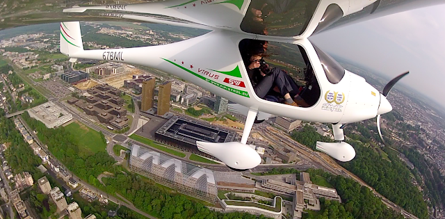

Nouvelle mission Wings for Science : Pour le département de géographie de l'université du Luxembourg, nous sommes chargés d'effectuer un modèle 3d de tout le centre-ville afin de les aider dans leur politique d'urbanisme, à optimiser la construction des futurs bâtiments. L'objectif ? réduire la pollution que subissent les luxembourgeois.
Le modèle 3d est réalisé, et vous y avez maintenant accès directement depuis votre smartphone/ordi !

Posts récents
Recent Posts